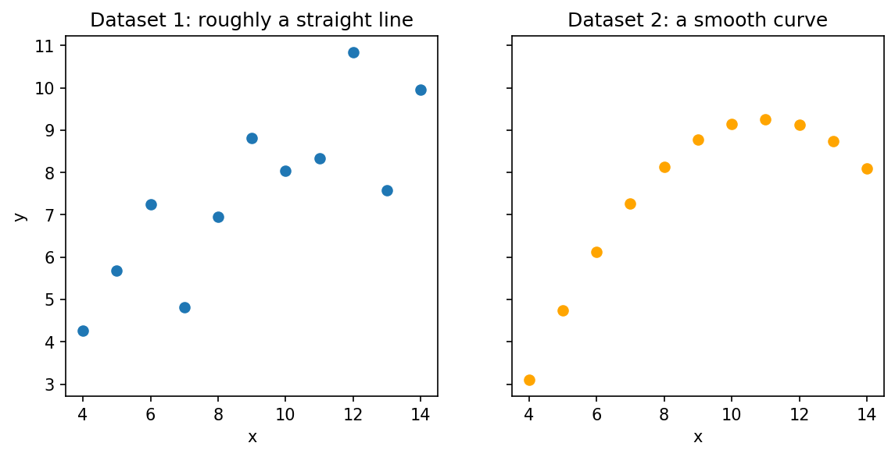
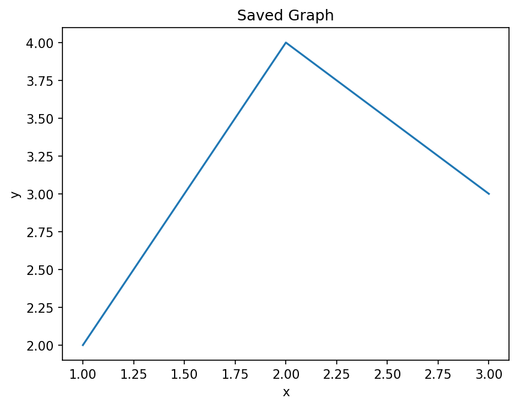

Matplotlib: Conceptual Questions and Answers¶
This page collects twenty conceptual questions on data visualization with Matplotlib, the most widely used plotting library in Python. The questions are the same as those printed at the end of the Matplotlib chapter in the book. Here each one has a full answer, and most answers also have a short script that you can run, its printed output, and a follow-up question to test your understanding.
The questions move from the general to the specific:
- why the type and arrangement of data decide which plot to use
- how a basic Matplotlib program is organized, and the two styles of writing it
- how to give data to Matplotlib (lists, NumPy arrays and pandas objects)
- plots for studying distributions: histograms, box plots and violin plots
- plots for coordinate data and for grid (matrix) data
- adding extra information: error bars, bubble sizes, colors, titles, labels and legends
- arranging several plots in one figure, and saving figures to files
These ideas are not limited to Matplotlib. Almost every data analysis task in Python ends with a graph, and other plotting libraries such as Seaborn and pandas' own plotting tools are built on top of Matplotlib. So a clear understanding of these concepts will help you in any Python work that involves data.
How to use this page: try to answer each question in your own words first. Then read the answer, run the script, and try the follow-up question. The answers to the follow-up questions are hidden; click "Show answer" to see them.
About the scripts: every script was run with Matplotlib 3.10, NumPy 2 and pandas 3.0, and the printed output is shown below it. When a script calls plt.show(), a graph window opens on your computer. A picture of that graph is shown on this page below the printed output, so you can check your result.
Table of Contents¶
- Matplotlib: Conceptual Questions and Answers
- Part 1: Data and Visualization Basics
- Part 2: Getting Started with Matplotlib
- 3. Why is matplotlib.pyplot commonly imported as plt?
- 4. Explain the four-step workflow used to create a basic Matplotlib graph.
- 5. What is the difference between the state-based and object-oriented approaches in Matplotlib?
- 6. Why must x and y sequences have the same length in coordinate-based plots?
- 7. What are the three layers used to build a Matplotlib chart?
- 8. Why should chart elements usually be added after plotting but before
plt.show()?
- Part 3: Feeding Data to Matplotlib
- Part 4: Distribution Plots
- Part 5: Coordinate Data and Grid Data
- Part 6: Adding More Information to a Graph
- Part 7: Organizing and Saving Figures
- Quick Revision Table
- Glossary of Technical Terms
Part 1: Data and Visualization Basics¶
1. Why is understanding data types important before selecting a Matplotlib plot?¶
Answer
Data types determine how information should be represented visually. Nominal, ordinal, interval, and ratio data each have different properties and therefore require different visualization techniques. A bar chart may be appropriate for nominal categories, while a line graph is more suitable for continuous measurements over time. Choosing an inappropriate plot can hide patterns, create misleading conclusions, or distort relationships present in the dataset. Effective visualization begins with understanding the nature of the underlying data.
The four data types in brief
| Data type | What it is | Example | Often suitable plots |
|---|---|---|---|
| Nominal | Categories with no order | Blood group, city | Bar chart, pie chart |
| Ordinal | Categories with a meaningful order | Grades A, B, C; satisfaction level | Bar chart with bars in their natural order |
| Interval | Numbers with equal steps but no true zero | Temperature in °C, calendar year | Line plot, histogram, box plot |
| Ratio | Numbers with a true zero | Height, weight, income | Histogram, scatter plot, box plot, line plot |
See Level of measurement (Wikipedia) for more detail.
How to choose a plot, step by step
flowchart TD
A[1 - Identify each variable you want to show] --> B[2 - Decide its data type]
B --> C[3 - Decide what the graph must show]
C --> D{4 - What is the goal}
D -->|Compare categories| E[5 - Bar chart]
D -->|Change over time| F[6 - Line plot]
D -->|Spread of one numeric variable| G[7 - Histogram, box plot or violin plot]
D -->|Relationship of two numeric variables| H[8 - Scatter plot]
Example of a wrong choice: joining the sales figures of Apples, Bananas and Mangoes with a line suggests that sales "rise" or "fall" from one fruit to the next. Fruits are nominal categories with no order, so this trend is false. A bar chart shows the same numbers honestly.
Follow-up question: A survey records each student's favourite sport and their height. Which plot suits each variable on its own?
Show answer
Step 1 - Favourite sport is nominal (categories with no order). A bar chart of how many students chose each sport suits it. Step 2 - Height is ratio data (numbers with a true zero). A histogram or box plot suits it, because it shows how heights are spread.2. How does data visualization reveal insights that may remain hidden in tabular data?¶
Answer
Tables are excellent for storing exact values, but they are often poor at revealing trends and patterns. Visualizations allow the human brain to detect increases, decreases, clusters, outliers, and relationships much more quickly. Graphs help identify trends over time, compare categories, detect unusual observations, and communicate findings effectively. Thus, visualization transforms raw numbers into meaningful information.
A cluster is a group of values that sit close together. An outlier is a value that lies far away from the rest. See Outlier (Wikipedia).
A famous example
In 1973 the statistician Francis Anscombe created four small datasets that have almost identical averages, spreads and correlations, yet look completely different when plotted. They are known as Anscombe's quartet (Wikipedia). The script below uses two of them.
# Step 1 - Import the libraries
import numpy as np
import matplotlib.pyplot as plt
# Step 2 - Two small datasets from "Anscombe's quartet"
# Both share the same x-values but have different y-values.
x = [10, 8, 13, 9, 11, 14, 6, 4, 12, 7, 5]
y1 = [8.04, 6.95, 7.58, 8.81, 8.33, 9.96, 7.24, 4.26, 10.84, 4.82, 5.68]
y2 = [9.14, 8.14, 8.74, 8.77, 9.26, 8.10, 6.13, 3.10, 9.13, 7.26, 4.74]
# Step 3 - Compare the usual summary numbers of the two datasets
# ddof=1 gives the "sample" standard deviation.
# np.corrcoef() gives a small table; the value at [0, 1] is the correlation of x and y.
for name, y in [("Dataset 1", y1), ("Dataset 2", y2)]:
print(f"{name}: mean of y = {np.mean(y):.2f}, "
f"standard deviation of y = {np.std(y, ddof=1):.2f}, "
f"correlation with x = {np.corrcoef(x, y)[0, 1]:.2f}")
# Step 4 - Plot both datasets side by side to see what the numbers hide
fig, ax = plt.subplots(1, 2, figsize=(9, 4), sharey=True)
ax[0].scatter(x, y1)
ax[0].set_title("Dataset 1: roughly a straight line")
ax[1].scatter(x, y2, color="orange")
ax[1].set_title("Dataset 2: a smooth curve")
for a in ax:
a.set_xlabel("x")
ax[0].set_ylabel("y")
# Step 5 - Display the graphs
plt.show()
Output
Dataset 1: mean of y = 7.50, standard deviation of y = 2.03, correlation with x = 0.82
Dataset 2: mean of y = 7.50, standard deviation of y = 2.03, correlation with x = 0.82

What this shows: judged only by the numbers, the two datasets look the same. The graph tells a different story. In Dataset 1 the points scatter around a straight rising line. In Dataset 2 the points lie on a smooth curve that rises and then falls. A table of 11 numbers would not make this difference obvious, but the graph shows it at a glance.
Follow-up question: If summary numbers such as the mean can be misleading, should we stop using them?
Show answer
No. Summary numbers are useful and precise. The lesson is to use them **together with** a graph. The numbers give exact values, and the graph shows the shape and any unusual points that the numbers may hide.Part 2: Getting Started with Matplotlib¶
3. Why is matplotlib.pyplot commonly imported as plt?¶
Answer
The pyplot module contains the most frequently used plotting functions in Matplotlib. Writing matplotlib.pyplot repeatedly is cumbersome, so the community adopted the convention of importing it as plt. This improves readability, reduces typing effort, and aligns with nearly all tutorials and documentation. Because the convention is so widely recognized, it also improves collaboration among programmers.
A module is a Python file that contains ready-made functions. pyplot is one module inside the larger matplotlib package. The word as in an import statement gives the module a short nickname, called an alias. See The import statement (Python documentation).
# Step 1 - Import pyplot using the usual short name
import matplotlib
import matplotlib.pyplot as plt
# Step 2 - Check what 'plt' refers to
print("plt is the module:", plt.__name__)
print("Matplotlib version:", matplotlib.__version__)
# Step 3 - The long name and the short name point to the same module
import matplotlib.pyplot
print("Same module?", plt is matplotlib.pyplot)
Output
plt is the module: matplotlib.pyplot
Matplotlib version: 3.10.9
Same module? True
The last line confirms that plt is just another name for matplotlib.pyplot. Nothing is copied or changed. Other common aliases follow the same idea: import numpy as np and import pandas as pd.
Follow-up question: Would import matplotlib.pyplot as graph work?
Show answer
Yes. Python accepts any valid name as an alias, and you would then write `graph.plot()` and `graph.show()`. It is not recommended, though, because other programmers expect `plt`, and the code becomes harder for them to read.4. Explain the four-step workflow used to create a basic Matplotlib graph.¶
Answer
The workflow consists of four stages: import the plotting library, prepare the data, create the plot, and display the result. Data is usually stored in lists, NumPy arrays, or pandas objects. Functions such as plt.plot() create the graphical representation. Finally, plt.show() renders the graph, which means it draws the graph and displays it on the screen. Following this sequence ensures a predictable and organized plotting process.
flowchart TD
A[Step 1 - Import the plotting library] --> B[Step 2 - Prepare the data]
B --> C[Step 3 - Create the plot]
C --> D[Step 4 - Display the result]
The four steps as a script
Step 1 - Import the plotting library
# Step 1 - Import the plotting library
import matplotlib.pyplot as plt
Step 2 - Prepare the data
# Step 2 - Prepare the data
months = [1, 2, 3, 4, 5, 6]
sales = [120, 135, 128, 150, 162, 170]
print("Step 2: Months:", months)
print(" Sales :", sales)
Output of this step:
Step 2: Months: [1, 2, 3, 4, 5, 6]
Sales : [120, 135, 128, 150, 162, 170]
Step 3 - Create the plot (plus a title and labels, so the graph makes sense)
# Step 3 - Create the plot (plus a title and labels, so the graph makes sense)
plt.plot(months, sales, marker="o")
plt.title("Monthly Sales")
plt.xlabel("Month")
plt.ylabel("Sales (units)")
print("Step 3: Line plot created with", len(months), "points")
Output of this step:
Step 3: Line plot created with 6 points
Step 4 - Display the result
# Step 4 - Display the result
plt.show()
Complete script
# Step 1 - Import the plotting library
import matplotlib.pyplot as plt
# Step 2 - Prepare the data
months = [1, 2, 3, 4, 5, 6]
sales = [120, 135, 128, 150, 162, 170]
print("Step 2: Months:", months)
print(" Sales :", sales)
# Step 3 - Create the plot (plus a title and labels, so the graph makes sense)
plt.plot(months, sales, marker="o")
plt.title("Monthly Sales")
plt.xlabel("Month")
plt.ylabel("Sales (units)")
print("Step 3: Line plot created with", len(months), "points")
# Step 4 - Display the result
plt.show()
Output
Step 2: Months: [1, 2, 3, 4, 5, 6]
Sales : [120, 135, 128, 150, 162, 170]
Step 3: Line plot created with 6 points

A title and axis labels were added in Step 3. They are not one of the four basic steps, but a real graph should almost always have them (see Question 18).
Follow-up question: What happens if Step 4, plt.show(), is left out?
Show answer
When the file is run as a normal Python script, the program finishes without opening a graph window, so you see nothing. In Jupyter notebooks the graph usually appears anyway, because the notebook displays figures automatically at the end of a cell. It is still good practice to call `plt.show()`.5. What is the difference between the state-based and object-oriented approaches in Matplotlib?¶
Answer
The state-based approach relies on functions such as plt.plot() and plt.title(), where Matplotlib automatically manages the current plotting area. The object-oriented approach uses objects such as fig and ax, allowing the programmer to explicitly control where graphs are drawn. While the state-based style is simpler for beginners, the object-oriented style is preferred for complex dashboards, multiple subplots, and professional applications.
Here fig is a Figure (the whole window or page) and ax is an Axes (one plotting area inside the figure, with its own x-axis and y-axis). A dashboard is a screen that shows several related graphs together. See Matplotlib Application Interfaces.
| Task | State-based (pyplot) style | Object-oriented style |
|---|---|---|
| Create a plot area | Created automatically | fig, ax = plt.subplots() |
| Draw a line | plt.plot(x, y) |
ax.plot(x, y) |
| Add a title | plt.title("...") |
ax.set_title("...") |
| Add axis labels | plt.xlabel("..."), plt.ylabel("...") |
ax.set_xlabel("..."), ax.set_ylabel("...") |
| Choose which plot to draw on | Matplotlib uses the "current" one | You name it: ax, ax[0], ax[1], ... |
# Step 1 - Import pyplot
import matplotlib.pyplot as plt
x = [1, 2, 3, 4]
y = [10, 20, 15, 25]
# Step 2 - State-based style: pyplot keeps track of the "current" figure and axes
plt.figure()
plt.plot(x, y)
plt.title("State-based style")
plt.xlabel("x")
plt.ylabel("y")
print("State-based title :", plt.gca().get_title()) # gca() = "get current axes"
plt.show()
# Step 3 - Object-oriented style: we create and name the figure and axes ourselves
fig, ax = plt.subplots()
ax.plot(x, y)
ax.set_title("Object-oriented style")
ax.set_xlabel("x")
ax.set_ylabel("y")
print("Object-oriented title:", ax.get_title())
print("Type of fig:", type(fig).__name__)
print("Type of ax :", type(ax).__name__)
plt.show()
Output
State-based title : State-based style
Object-oriented title: Object-oriented style
Type of fig: Figure
Type of ax : Axes


plt.gca() means "get current axes". It shows the plot area that the state-based style was quietly using. In the object-oriented style we never need it, because we already hold the plot area in the variable ax.
Follow-up question: In the state-based style, the title function is plt.title(). What is the matching method in the object-oriented style?
Show answer
`ax.set_title()`. Most object-oriented methods that change a setting start with `set_`, such as `ax.set_xlabel()`, `ax.set_ylabel()` and `ax.set_xlim()`.6. Why must x and y sequences have the same length in coordinate-based plots?¶
Answer
Coordinate plots rely on ordered pairs of values. Each x-value must correspond to exactly one y-value to form a valid coordinate pair. If the lengths differ, Matplotlib cannot determine how points should be matched. Consequently, a ValueError is raised. The rule ensures that every plotted point has a complete coordinate description.
A sequence is an ordered collection of items, such as a list or an array. A ValueError is the type of error Python raises when a value has the right type but an unsuitable size or content. See Built-in exceptions (Python documentation).
# Step 1 - Import pyplot
import matplotlib.pyplot as plt
# Step 2 - Matching lengths: 4 x-values and 4 y-values make 4 points
x = [1, 2, 3, 4]
y = [5, 7, 6, 9]
print("Pairs formed:", list(zip(x, y)))
plt.plot(x, y, marker="o")
plt.title("Matching lengths: 4 points plotted")
plt.xlabel("x")
plt.ylabel("y")
plt.show()
# Step 3 - Mismatched lengths: 3 x-values but 4 y-values
x_short = [1, 2, 3]
try:
plt.plot(x_short, y)
except ValueError as error:
print("plot() error :", error)
try:
plt.scatter(x_short, y)
except ValueError as error:
print("scatter() error:", error)
Output
Pairs formed: [(1, 5), (2, 7), (3, 6), (4, 9)]
plot() error : x and y must have same first dimension, but have shapes (3,) and (4,)
scatter() error: x and y must be the same size

How to fix the error, step by step:
- Print
len(x)andlen(y)to see which list is longer. - Find the missing or extra value.
- Correct the data so that both lists have the same length.
Notice that the exact wording of the error is different for plot() and scatter(), but both are ValueErrors.
Follow-up question: plt.plot([4, 7, 5]) works even though only one list is given. Why does it not raise the same error?
Show answer
When only one sequence is given, Matplotlib treats it as the y-values and creates the x-values itself (0, 1, 2, ...). So the lengths always match. This is Pattern 1, explained in Question 10.7. What are the three layers used to build a Matplotlib chart?¶
Answer
Every chart can be viewed as consisting of Data, Options, and Chart Elements. Data represents the values being visualized. Options control appearance through parameters such as color, linewidth, markers, and transparency. Chart Elements include titles, axis labels, legends, and grids. Separating these layers improves readability and makes charts easier to develop and maintain.
| Layer | Question it answers | Examples in code |
|---|---|---|
| 1. Data | What is being shown? | days, temperature lists |
| 2. Options | How does the data look? | color="red", linewidth=2, marker="o", alpha=0.8 |
| 3. Chart Elements | What explains the graph to the reader? | set_title(), set_xlabel(), legend(), grid() |
The three layers are a helpful teaching model used in this book. They are not official Matplotlib terms. Matplotlib's own documentation describes a chart in terms of the Figure, the Axes and the individual drawn items, called Artists. See Anatomy of a figure (Matplotlib).
The three layers in a script
Step 1 - Import pyplot
# Step 1 - Import pyplot
import matplotlib.pyplot as plt
Step 2 - LAYER 1: Data (the values to be shown)
# Step 2 - LAYER 1: Data (the values to be shown)
days = ["Mon", "Tue", "Wed", "Thu", "Fri"]
temperature = [31, 33, 32, 35, 34]
print("Layer 1 - Data:", list(zip(days, temperature)))
Output of this step:
Layer 1 - Data: [('Mon', 31), ('Tue', 33), ('Wed', 32), ('Thu', 35), ('Fri', 34)]
Step 3 - LAYER 2: Options (how the data looks), given inside the plotting call
# Step 3 - LAYER 2: Options (how the data looks), given inside the plotting call
fig, ax = plt.subplots()
ax.plot(
days,
temperature,
color="red", # Line color
linewidth=2, # Line thickness
marker="o", # Dot at each point
alpha=0.8, # Slight transparency
label="Delhi", # Name used by the legend
)
print("Layer 2 - Options: color=red, linewidth=2, marker=o, alpha=0.8")
Output of this step:
Layer 2 - Options: color=red, linewidth=2, marker=o, alpha=0.8
Step 4 - LAYER 3: Chart elements (what explains the graph)
# Step 4 - LAYER 3: Chart elements (what explains the graph)
ax.set_title("Daily Maximum Temperature")
ax.set_xlabel("Day")
ax.set_ylabel("Temperature (°C)")
ax.legend()
ax.grid(True, alpha=0.3)
print("Layer 3 - Chart elements: title, axis labels, legend, grid")
Output of this step:
Layer 3 - Chart elements: title, axis labels, legend, grid
Step 5 - Display the chart
# Step 5 - Display the chart
plt.show()
Complete script
# Step 1 - Import pyplot
import matplotlib.pyplot as plt
# Step 2 - LAYER 1: Data (the values to be shown)
days = ["Mon", "Tue", "Wed", "Thu", "Fri"]
temperature = [31, 33, 32, 35, 34]
print("Layer 1 - Data:", list(zip(days, temperature)))
# Step 3 - LAYER 2: Options (how the data looks), given inside the plotting call
fig, ax = plt.subplots()
ax.plot(
days,
temperature,
color="red", # Line color
linewidth=2, # Line thickness
marker="o", # Dot at each point
alpha=0.8, # Slight transparency
label="Delhi", # Name used by the legend
)
print("Layer 2 - Options: color=red, linewidth=2, marker=o, alpha=0.8")
# Step 4 - LAYER 3: Chart elements (what explains the graph)
ax.set_title("Daily Maximum Temperature")
ax.set_xlabel("Day")
ax.set_ylabel("Temperature (°C)")
ax.legend()
ax.grid(True, alpha=0.3)
print("Layer 3 - Chart elements: title, axis labels, legend, grid")
# Step 5 - Display the chart
plt.show()
Output
Layer 1 - Data: [('Mon', 31), ('Tue', 33), ('Wed', 32), ('Thu', 35), ('Fri', 34)]
Layer 2 - Options: color=red, linewidth=2, marker=o, alpha=0.8
Layer 3 - Chart elements: title, axis labels, legend, grid

Follow-up question: Is label="Delhi" an option or a chart element?
Show answer
It is written as an option inside `ax.plot()` (Layer 2), but its purpose is to supply the text for the legend (Layer 3). The legend itself appears only when `ax.legend()` is called. This shows that the layers work together.8. Why should chart elements usually be added after plotting but before plt.show()?¶
Answer
Some chart elements depend on the plotted data. A legend, for example, can only list lines or bars that already exist, so it must be added after the data is plotted. Titles, axis labels and grids do not strictly need the data first, because they belong to the plot area rather than to the lines. Still, adding them after plotting keeps the script in a clear, natural order: first draw, then explain. All of these elements must be added before plt.show(), because plt.show() is the step that displays the finished chart. In a normal script the program waits at plt.show() until the window is closed, and changes made after that are not seen in the window. Following the order Plot → Customize → Show reduces confusion and prevents missing elements.
flowchart TD
A[Step 1 - Plot the data with labels] --> B[Step 2 - Add title and axis labels]
B --> C[Step 3 - Add legend and grid]
C --> D[Step 4 - Save the figure if needed]
D --> E[Step 5 - Show the figure]
# Step 1 - Import pyplot
import matplotlib.pyplot as plt
# Step 2 - A title set BEFORE plotting still works
fig, ax = plt.subplots()
ax.set_title("Title set first")
ax.plot([1, 2, 3], [4, 6, 5], label="Series A")
print("Title:", ax.get_title())
# Step 3 - A legend must come AFTER the labelled data has been plotted
legend = ax.legend()
print("Legend entries:", [text.get_text() for text in legend.get_texts()])
# Step 4 - Show the finished chart last
plt.show()
Output
Title: Title set first
Legend entries: ['Series A']

The title was set before anything was plotted, and it still works. The legend was called after the labelled line was drawn, so it found one entry. If ax.legend() were called before ax.plot(), Matplotlib would print a warning like this and draw no legend:
UserWarning: No artists with labels found to put in legend.
Follow-up question: Why is saving placed before showing in the flowchart above?
Show answer
In many setups, closing the window that `plt.show()` opens also clears the figure. Saving after that could produce a blank image. See Question 20.Part 3: Feeding Data to Matplotlib¶
9. Compare plotting Python lists, NumPy arrays, and Pandas data structures.¶
Answer
Python lists are simple and suitable for small datasets. NumPy arrays are optimized for mathematical operations and numerical computing. Pandas Series and DataFrames are ideal for structured tabular data and data analysis workflows. Matplotlib can accept all three formats, giving programmers flexibility while allowing them to choose the structure most appropriate for the problem.
| Structure | What it is | Strength | Example |
|---|---|---|---|
| Python list | Built-in ordered collection of items | Simple, needs no extra library | [3, 5, 4] |
| NumPy array | A grid of numbers of one type, from the NumPy library | Fast maths on all values at once | np.array([3, 5, 4]) |
| pandas Series | One labelled column of data | Keeps labels such as dates or years with the values | pd.Series([3, 5, 4], index=[2021, 2022, 2023]) |
| pandas DataFrame | A table of labelled rows and columns | Handles real datasets with many columns | pd.DataFrame({"year": [...], "sales": [...]}) |
See NumPy for absolute beginners and pandas: Intro to data structures.
# Step 1 - Import the libraries
import numpy as np
import pandas as pd
import matplotlib.pyplot as plt
# Step 2 - The same five values stored in three different ways
values_list = [3, 5, 4, 6, 8]
values_array = np.array(values_list)
values_series = pd.Series(values_list, index=[2021, 2022, 2023, 2024, 2025])
print("Python list :", type(values_list).__name__, values_list)
print("NumPy array :", type(values_array).__name__, values_array)
print("Pandas Series:", type(values_series).__name__)
print(values_series)
# Step 3 - NumPy arrays allow maths on all values at once; lists do not
print()
print("array * 2 :", values_array * 2)
print("list * 2 :", values_list * 2)
# Step 4 - Matplotlib accepts all three
fig, ax = plt.subplots(1, 3, figsize=(10, 3))
ax[0].plot(values_list)
ax[0].set_title("From a list")
ax[1].plot(values_array)
ax[1].set_title("From a NumPy array")
ax[2].plot(values_series) # The Series index (years) becomes the x-values
ax[2].set_title("From a pandas Series")
plt.tight_layout()
plt.show()
Output
Python list : list [3, 5, 4, 6, 8]
NumPy array : ndarray [3 5 4 6 8]
Pandas Series: Series
2021 3
2022 5
2023 4
2024 6
2025 8
dtype: int64
array * 2 : [ 6 10 8 12 16]
list * 2 : [3, 5, 4, 6, 8, 3, 5, 4, 6, 8]

What to notice:
- Multiplying the NumPy array by 2 doubles every value. Multiplying the list by 2 simply repeats the list. This is why NumPy arrays are preferred for calculations.
- All three can be plotted. With the list and the array, the x-values are 0 to 4. With the pandas Series, Matplotlib uses the index (the years 2021 to 2025) as the x-values.
- Internally, Matplotlib turns lists and pandas objects into NumPy arrays before drawing.
Follow-up question: You have a table with columns "year" and "rainfall" stored in a DataFrame df. How would you plot rainfall against year with Matplotlib?
Show answer
Select the two columns and pass them to `plot()`:plt.plot(df["year"], df["rainfall"])
10. What is meant by Pattern 1 (Y-only input) in Matplotlib?¶
Answer
In Pattern 1, only a sequence of y-values is supplied. Matplotlib automatically generates x-values as 0, 1, 2, 3, and so on. This pattern is useful when the horizontal positions are not important or when quick exploratory plots are needed. It simplifies plotting because the user does not need to explicitly prepare x-coordinates.
Exploratory plots are quick, rough graphs made while you are still getting to know the data, before you make polished graphs for others.
# Step 1 - Import pyplot
import matplotlib.pyplot as plt
# Step 2 - Give only y-values
y = [4, 7, 5, 9]
lines = plt.plot(y) # plot() returns a list of the lines it drew
# Step 3 - Look at the x-values Matplotlib created
line = lines[0]
print("y-values given :", line.get_ydata().tolist())
print("x-values generated:", line.get_xdata().tolist())
# Step 4 - Add a title and labels, then display the graph
plt.title("Pattern 1: only y-values given")
plt.xlabel("Position (created automatically)")
plt.ylabel("y-value")
plt.show()
Output
y-values given : [4, 7, 5, 9]
x-values generated: [0.0, 1.0, 2.0, 3.0]

The two patterns compared
| Pattern | Call | x-values used | When to use |
|---|---|---|---|
| Pattern 1 (Y-only) | plt.plot(y) |
0, 1, 2, ... created automatically | Quick checks; when position is just the order of the values |
| Pattern 2 (X and Y) | plt.plot(x, y) |
The values you give | When x has real meaning, such as years, months or distances |
Follow-up question: You plot monthly rainfall for January to December with plt.plot(rainfall). What will the x-axis show, and is that a problem?
Show answer
The x-axis will show 0 to 11, so January appears as 0 and December as 11. That can confuse a reader. For a finished graph, give the months as x-values, or set the tick labels to the month names.Part 4: Distribution Plots¶
11. How do histograms differ from bar charts?¶
Answer
A bar chart displays predefined categories and their associated values. The programmer explicitly provides both category labels and heights. A histogram, on the other hand, accepts raw numerical data and automatically groups values into bins. The heights of histogram bars represent frequencies (counts) rather than category values. Thus, histograms analyze distributions, whereas bar charts compare categories.
A distribution describes how the values of a variable are spread out: which values are common and which are rare. See Histogram (Wikipedia).
# Step 1 - Import pyplot
import matplotlib.pyplot as plt
fig, ax = plt.subplots(1, 2, figsize=(9, 3.5))
# Step 2 - Bar chart: we supply the categories AND the heights
subjects = ["Maths", "Science", "English"]
average_marks = [72, 65, 80]
ax[0].bar(subjects, average_marks)
ax[0].set_title("Bar chart: heights given by us")
print("Bar chart heights (given):", average_marks)
# Step 3 - Histogram: we supply raw marks; Matplotlib groups and counts them
marks = [45, 52, 58, 61, 63, 67, 68, 71, 74, 76, 79, 82, 85, 91]
counts, bin_edges, _ = ax[1].hist(marks, bins=5, edgecolor="black")
ax[1].set_title("Histogram: heights counted by Matplotlib")
print("Histogram bin edges :", [round(float(edge), 1) for edge in bin_edges])
print("Histogram counts (found) :", [int(c) for c in counts])
# Step 4 - Display both
plt.tight_layout()
plt.show()
Output
Bar chart heights (given): [72, 65, 80]
Histogram bin edges : [45.0, 54.2, 63.4, 72.6, 81.8, 91.0]
Histogram counts (found) : [2, 3, 3, 3, 3]

| Feature | Bar chart | Histogram |
|---|---|---|
| Input | Categories and their heights | Raw numbers only |
| Who decides the heights | The programmer | Matplotlib, by counting |
| x-axis | Separate categories | A continuous number line divided into bins |
| Gaps between bars | Usually yes | No; neighbouring bins touch |
| Order of bars | Can be changed (for unordered categories) | Fixed by the number line |
| Matplotlib function | plt.bar() |
plt.hist() |
Follow-up question: In the output above, the histogram has five bins but the bar chart has three bars. Where did the number five come from?
Show answer
It came from `bins=5` in the script. Matplotlib divided the range of marks, from 45 to 91, into five equal intervals and counted the marks in each. The bar chart has three bars simply because three subjects were given.12. What are bins and why are they important in histograms?¶
Answer
Bins are intervals (ranges of values) used to group numerical observations. By default they all have the same width. Instead of plotting every individual value, a histogram counts how many observations fall within each bin. The choice of bin size influences how the distribution appears. Too few bins may hide important patterns, while too many bins may introduce noise, meaning random ups and downs that are not real features of the data. Proper bin selection is therefore critical for meaningful interpretation.
If you do not choose, Matplotlib uses 10 bins. You can also write bins="auto" to let NumPy pick a number. See numpy.histogram_bin_edges.
# Step 1 - Import NumPy
import numpy as np
# Step 2 - Make 200 random values with a fixed seed so the output repeats
np.random.seed(1)
data = np.random.normal(loc=50, scale=10, size=200)
# Step 3 - Count the values with different numbers of bins
# np.histogram() does the same counting as plt.hist(), but without drawing.
for n_bins in [3, 10, 40]:
counts, edges = np.histogram(data, bins=n_bins)
width = edges[1] - edges[0]
print(f"bins = {n_bins:2d} bin width = {width:5.2f} "
f"tallest bin = {counts.max():3d} empty bins = {np.sum(counts == 0)}")
Output
bins = 3 bin width = 16.54 tallest bin = 133 empty bins = 0
bins = 10 bin width = 4.96 tallest bin = 44 empty bins = 0
bins = 40 bin width = 1.24 tallest bin = 14 empty bins = 3
Reading the output, step by step:
- With 3 bins, each bin is more than 16 units wide, and one bin holds 133 of the 200 values. The shape of the data is lost.
- With 10 bins, each bin is about 5 units wide. The familiar bell shape can be seen.
- With 40 bins, each bin is just over 1 unit wide. The tallest bin holds only 14 values and 3 bins are empty, so the histogram looks ragged.
Follow-up question: Can bins be of unequal width?
Show answer
Yes. Instead of a number, you can give a list of bin edges, for example `plt.hist(marks, bins=[0, 40, 60, 75, 100])`. This is useful for grade bands. Take care, though: wide bins naturally collect more values, so the bars must be read with the widths in mind. Setting `density=True` adjusts the heights to allow for different widths.13. Compare histograms, box plots, and violin plots as distribution-analysis tools.¶
Answer
Histograms show frequencies within intervals and reveal the overall shape of a distribution. Box plots summarize data using quartiles, medians, whiskers, and outliers. Violin plots extend box-plot ideas by displaying a smooth density estimate of the data. Although all three describe distributions, each emphasizes different statistical characteristics.
Some of these words need a short explanation:
- Quartiles divide the ordered data into four equal parts. Q1 has 25% of values below it, the median has 50%, and Q3 has 75%. See Quartile (Wikipedia).
- Whiskers are the lines extending from the box. In Matplotlib they reach the furthest values within 1.5 × IQR of the box, where IQR (the interquartile range) is Q3 minus Q1. See Box plot (Wikipedia).
- A density estimate is a smooth curve showing where values are crowded and where they are sparse. See Violin plot (Wikipedia).
| Feature | Histogram | Box plot | Violin plot |
|---|---|---|---|
| Shows the shape of the data | Yes, in steps | No | Yes, as a smooth curve |
| Shows the median and quartiles | No (unless added) | Yes | Yes, when switched on |
| Marks outliers | Not clearly | Yes, as separate dots | No; they appear as thin tails |
| Shows two or more peaks | Yes | No | Yes |
| Easy to compare many groups | No | Yes | Yes |
| Matplotlib function | plt.hist() |
plt.boxplot() |
plt.violinplot() |
The script below calculates the numbers each tool is built from, for the same 15 marks.
# Step 1 - Import NumPy
import numpy as np
# Step 2 - A small set of exam marks
marks = np.array([35, 48, 52, 55, 58, 60, 61, 63, 65, 68, 70, 72, 75, 88, 97])
# Step 3 - The numbers a box plot is built from
q1, median, q3 = np.percentile(marks, [25, 50, 75])
iqr = q3 - q1
print(f"Q1 = {q1}, median = {median}, Q3 = {q3}, IQR = {iqr}")
print(f"Whisker limits (1.5 x IQR rule): {q1 - 1.5 * iqr} to {q3 + 1.5 * iqr}")
outliers = marks[(marks < q1 - 1.5 * iqr) | (marks > q3 + 1.5 * iqr)]
print("Outliers:", outliers)
# Step 4 - The counts a histogram is built from
counts, edges = np.histogram(marks, bins=4)
print("Histogram bin edges:", edges)
print("Histogram counts :", counts)
Output
Q1 = 56.5, median = 63.0, Q3 = 71.0, IQR = 14.5
Whisker limits (1.5 x IQR rule): 34.75 to 92.75
Outliers: [97]
Histogram bin edges: [35. 50.5 66. 81.5 97. ]
Histogram counts : [2 7 4 2]
The box plot would show a box from 56.5 to 71.0 with a median line at 63.0 and one outlier dot at 97. The histogram would show four bars of heights 2, 7, 4 and 2. A violin plot would show a shape widest around the middle bin, where 7 of the 15 marks lie. Note that Matplotlib's violinplot() draws only the shape and the minimum and maximum lines by default; the median and quartiles must be switched on with showmedians=True and quantiles=[0.25, 0.75].
Follow-up question: A class has two groups of students, one scoring around 40 and one around 80. Which of the three tools could mislead you?
Show answer
The box plot. It would show one wide box with a median somewhere in the gap between the two groups, where few students actually scored. The histogram and the violin plot would both show two separate peaks.Part 5: Coordinate Data and Grid Data¶
14. What is the difference between coordinate data and grid/matrix data?¶
Answer
Coordinate data consists of x-y pairs and is typically visualized using plots such as line charts and scatter plots. Grid or matrix data is arranged in rows and columns, where each cell contains a value. Matrix data is commonly visualized using methods such as imshow(), contour(), and contourf(). The choice depends on the structure of the dataset.
A matrix is a rectangular arrangement of numbers in rows and columns. In Python it is usually stored as a 2-D NumPy array.
| Feature | Coordinate data | Grid or matrix data |
|---|---|---|
| Structure | x-y pairs | Rows and columns |
| Stored in Python as | Two 1-D lists or arrays of equal length | One 2-D array |
| Labels needed to find one value | One (the x-value) | Two (the row and the column) |
| Example | Temperature for each month | Temperature for each city and each month |
| Typical methods | plot(), scatter() |
imshow(), contour(), contourf() |
# Step 1 - Import NumPy
import numpy as np
# Step 2 - Coordinate data: two 1-D sequences of the same length
months = np.array([1, 2, 3])
temperature = np.array([18, 21, 25])
print("Coordinate data shapes:", months.shape, temperature.shape)
# Step 3 - Grid data: one 2-D array (rows = cities, columns = months)
grid = np.array([
[18, 21, 25], # Delhi
[15, 19, 22], # Ranchi
])
print("Grid data shape :", grid.shape)
print("Value in row 1, column 2:", grid[1, 2])
Output
Coordinate data shapes: (3,) (3,)
Grid data shape : (2, 3)
Value in row 1, column 2: 22
The shape of an array gives its size. (3,) means a single row of 3 values. (2, 3) means 2 rows and 3 columns. To find one value in the grid, you need both a row number and a column number, as in grid[1, 2]. Counting starts at 0, so this is the second row and the third column.
Follow-up question: A digital photograph is 800 pixels wide and 600 pixels tall. Is it coordinate data or grid data?
Show answer
Grid data. Each pixel (tiny dot of color) has a row and a column position, and its value is its brightness or color. That is why `imshow()`, which stands for "image show", is used to display both photographs and other matrices.15. How does imshow() differ from contour() and contourf()?¶
Answer
imshow() treats a matrix like an image and represents values through colors. contour() draws lines connecting locations that have equal values. contourf() extends this idea by filling regions between contour lines with colors. These methods are widely used in scientific visualization, geographical mapping, and heat-map style representations.
A heat map is a grid of colored cells in which the color shows the size of each value. A contour line joins points of equal value, like the height lines on a map. See Heat map (Wikipedia) and Contour line (Wikipedia).
# Step 1 - Import the libraries
import numpy as np
import matplotlib.pyplot as plt
# Step 2 - A small 4 x 4 matrix of values
Z = np.array([
[1, 2, 3, 4],
[2, 3, 4, 5],
[3, 4, 5, 6],
[4, 5, 6, 7],
])
fig, ax = plt.subplots(1, 3, figsize=(11, 3.5))
# Step 3 - imshow(): one colored square per value
img = ax[0].imshow(Z)
ax[0].set_title("imshow()")
fig.colorbar(img, ax=ax[0])
# Step 4 - contour(): lines joining equal values
lines = ax[1].contour(Z, levels=[2, 4, 6])
ax[1].clabel(lines)
ax[1].set_title("contour()")
print("contour() line values :", lines.levels.tolist())
# Step 5 - contourf(): filled bands between those values
bands = ax[2].contourf(Z, levels=[1, 2, 4, 6, 7])
fig.colorbar(bands, ax=ax[2])
ax[2].set_title("contourf()")
print("contourf() band edges :", bands.levels.tolist())
plt.tight_layout()
plt.show()
Output
contour() line values : [2.0, 4.0, 6.0]
contourf() band edges : [1.0, 2.0, 4.0, 6.0, 7.0]

| Feature | imshow() |
contour() |
contourf() |
|---|---|---|---|
| What is drawn | One colored square per value | Lines at chosen values | Colored bands between chosen values |
| Shows every value separately | Yes | No | No |
| Smooths between values | No | Yes | Yes |
| Row 0 of the matrix is drawn at | The top (like a printed table) | The bottom (like a graph) | The bottom (like a graph) |
| Best for | Images, heat maps, tables of values | Maps of height or pressure | Regions of similar values |
Reading the output: contour() drew three lines, at the values 2, 4 and 6. contourf() filled four bands, 1 to 2, 2 to 4, 4 to 6 and 6 to 7. The levels option sets these values. If levels is left out, Matplotlib chooses them.
Follow-up question: The matrix in the script is small and has only whole numbers. Which of the three methods gives the most honest picture of it?
Show answer
`imshow()`, because it shows each of the 16 values as its own square. `contour()` and `contourf()` draw smooth lines and bands between the values, which suggests in-between values that were never measured. They are more suitable when the data really changes smoothly, such as height across a landscape.Part 6: Adding More Information to a Graph¶
16. Why are error bars important in scientific visualizations?¶
Answer
Measurements often contain uncertainty due to instrument limitations, sampling variability, or experimental conditions. Error bars visually communicate this uncertainty by showing possible variation around measured values. They help viewers assess reliability and compare observations more accurately. Without uncertainty information, conclusions may appear more precise than justified.
Uncertainty means how sure we can be about a value. Sampling variability means that different samples from the same group give slightly different results. See Error bar (Wikipedia) and matplotlib.pyplot.errorbar.
# Step 1 - Import the libraries
import numpy as np
import matplotlib.pyplot as plt
# Step 2 - Three repeated measurements of plant height (cm) for three fertilizers
measurements = {
"A": [12.1, 13.0, 12.6],
"B": [14.8, 15.9, 15.2],
"C": [13.2, 16.0, 11.9],
}
# Step 3 - Work out the mean and the standard deviation for each group
# ddof=1 gives the "sample" standard deviation, the usual choice for a small set of measurements.
names = list(measurements.keys())
means = [np.mean(v) for v in measurements.values()]
spreads = [np.std(v, ddof=1) for v in measurements.values()]
for n, m, s in zip(names, means, spreads):
print(f"Fertilizer {n}: mean = {m:.2f} cm, standard deviation = {s:.2f} cm")
# Step 4 - Plot the means with error bars of one standard deviation
fig, ax = plt.subplots()
ax.errorbar(names, means, yerr=spreads, fmt="o", capsize=6)
ax.set_title("Mean plant height (error bars = 1 standard deviation)")
ax.set_xlabel("Fertilizer")
ax.set_ylabel("Height (cm)")
plt.show()
Output
Fertilizer A: mean = 12.57 cm, standard deviation = 0.45 cm
Fertilizer B: mean = 15.30 cm, standard deviation = 0.56 cm
Fertilizer C: mean = 13.70 cm, standard deviation = 2.10 cm

Reading the result, step by step:
- Fertilizer B has the highest mean height (15.30 cm).
- Fertilizer C has a higher mean (13.70 cm) than A (12.57 cm).
- But C's error bar is long (2.10 cm either side), because its three plants were very different from each other.
- So we cannot be confident that C is really better than A. Without the error bars, the graph would suggest a difference that the data does not firmly support.
Always say what the error bar means. An error bar may show one standard deviation, the standard error, or a confidence interval, and these give bars of very different lengths. The title in the script states "1 standard deviation" for this reason. Standard deviation measures how spread out the values are around their mean. See Standard deviation (Wikipedia).
Follow-up question: What does capsize=6 do in the script?
Show answer
It draws short horizontal caps, 6 points wide, at both ends of each error bar. The caps make the ends of the bars easier to see. Without `capsize`, the error bars are plain vertical lines.17. How do bubble plots and color scaling add extra dimensions to a graph?¶
Answer
Traditional graphs usually represent only x and y variables. Bubble plots introduce a third variable through marker size, while color scaling introduces an additional variable through color intensity or category assignment. These techniques allow multiple attributes to be displayed simultaneously, making visualizations richer and more informative.
Here a dimension means one variable shown on the graph. Color scaling means mapping numbers to colors using a colormap, which is a smooth range of colors such as light green to dark green. See Choosing colormaps (Matplotlib).
# Step 1 - Import pyplot
import matplotlib.pyplot as plt
# Step 2 - Four variables for five cities
cities = ["P", "Q", "R", "S", "T"]
area = [50, 120, 80, 200, 150] # x-axis
population = [2, 5, 3, 9, 6] # y-axis (millions)
green_cover = [30, 12, 25, 8, 18] # shown by color (percent)
budget = [40, 90, 60, 150, 110] # shown by bubble size
# Step 3 - Bubble size: 's' sets the AREA of each marker, in points squared
sizes = [b * 5 for b in budget]
print("Marker areas (s):", sizes)
# Step 4 - Draw: position = area and population, size = budget, color = green cover
fig, ax = plt.subplots()
points = ax.scatter(area, population, s=sizes, c=green_cover,
cmap="Greens", alpha=0.7, edgecolors="black")
fig.colorbar(points, ax=ax, label="Green cover (%)")
for name, x, y in zip(cities, area, population):
ax.annotate(name, (x, y), ha="center", va="center")
ax.set_xlabel("Area (sq km)")
ax.set_ylabel("Population (millions)")
ax.set_title("Bubble plot: 4 variables in one graph")
print("Variables shown: area (x), population (y), budget (size), green cover (color)")
plt.show()
Output
Marker areas (s): [200, 450, 300, 750, 550]
Variables shown: area (x), population (y), budget (size), green cover (color)

| What you see | Variable it shows | How it is set in scatter() |
|---|---|---|
| Position left to right | Area | First argument (x) |
| Position bottom to top | Population | Second argument (y) |
| Size of the bubble | Budget | s= |
| Shade of green | Green cover | c= together with cmap="Greens" |
An important detail: the s value sets the area of each marker, not its width. City S has a budget of 150, about 3.75 times city P's 40, so its bubble covers about 3.75 times the area but is only about twice as wide. This is the fair way to show size, because our eyes judge bubbles by their area.
Follow-up question: Why does the script add a color bar?
Show answer
Without a color bar, the reader cannot tell which shade stands for which percentage of green cover. The color bar is the key that turns colors back into numbers, just as the axis labels do for positions.18. Why are legends, titles, and axis labels considered essential chart elements?¶
Answer
A graph without explanatory elements may be visually attractive but difficult to interpret. Titles provide context, axis labels explain the meaning of variables, and legends identify multiple datasets. Together, these components transform a collection of shapes into a meaningful communication tool. They are essential for clarity and correctness.
| Element | Question it answers for the reader | Matplotlib code (object-oriented style) |
|---|---|---|
| Title | What is this graph about? | ax.set_title("Monthly Rainfall in Ranchi, 2025") |
| x-axis label | What runs left to right, and in what unit? | ax.set_xlabel("Month") |
| y-axis label | What runs bottom to top, and in what unit? | ax.set_ylabel("Rainfall (mm)") |
| Legend | Which line, bar or color is which dataset? | ax.plot(..., label="2025") then ax.legend() |
A quick checklist before sharing any graph:
- Does the title say what, where and when?
- Does each axis label name the quantity and its unit, such as "(mm)" or "(°C)"?
- If there is more than one dataset, is there a legend?
- If color or size carries meaning, is there a color bar or a note that explains it?
Follow-up question: A graph has two lines but only one of them was given a label. What will the legend show?
Show answer
The legend will show only the labelled line. Lines without a label are left out of the legend, so the reader cannot tell what the second line is. Every dataset that needs explaining should have a label.Part 7: Organizing and Saving Figures¶
19. What advantages do subplots provide in data visualization?¶
Answer
Subplots allow multiple visualizations to appear within the same figure. This makes comparison easier because related datasets can be viewed side by side. Subplots are especially useful when comparing trends, distributions, or alternative representations of the same data. They also encourage organized presentation of complex information.
A subplot is one plotting area (one Axes) inside a figure that contains several of them. See matplotlib.pyplot.subplots.
# Step 1 - Import pyplot
import matplotlib.pyplot as plt
# Step 2 - Create 2 rows and 2 columns of plots that share both axes
fig, ax = plt.subplots(2, 2, figsize=(8, 6), sharex=True, sharey=True)
print("Shape of the ax array:", ax.shape)
# Step 3 - Draw one small dataset in each plot
x = [1, 2, 3, 4]
data = {"North": [3, 4, 6, 7], "South": [2, 5, 5, 8],
"East": [4, 4, 5, 6], "West": [1, 3, 6, 9]}
for a, (region, y) in zip(ax.flat, data.items()): # ax.flat visits the plots one by one
a.plot(x, y, marker="o")
a.set_title(region)
print("Drew", region, "in a plot area")
# Step 4 - One overall title, tidy spacing, then display
fig.suptitle("Quarterly Sales by Region")
plt.tight_layout()
plt.show()
Output
Shape of the ax array: (2, 2)
Drew North in a plot area
Drew South in a plot area
Drew East in a plot area
Drew West in a plot area

What to notice:
plt.subplots(2, 2)returnsaxas a 2 × 2 grid of plot areas, so its shape is(2, 2). A single plot area is reached with two numbers, such asax[0, 1]for the top-right plot.ax.flatlets aforloop visit the four plot areas one after another, without worrying about rows and columns.sharex=Trueandsharey=Truegive all four plots the same scales. This is important for fair comparison. With shared scales, West's rise from 1 to 9 looks steeper than East's rise from 4 to 6 because it really is steeper.fig.suptitle()adds one title for the whole figure, above the four small titles.
Follow-up question: What might go wrong if the four plots did not share the same y-axis?
Show answer
Matplotlib would scale each plot to fit its own data. East's small rise from 4 to 6 could then fill the whole height of its plot and look as dramatic as West's rise from 1 to 9. Readers comparing the plots would be misled.20. Why is saving a graph often done before calling plt.show()?¶
Answer
In some environments, displaying a graph may close or clear the figure after it is shown. Saving first ensures that the desired image is written to disk before any such changes occur. Functions such as plt.savefig() or fig.savefig() can store graphs in formats including PNG, PDF, and SVG. This practice improves reliability and reproducibility, meaning that the same script always produces the same saved image.
| Format | Type | Best for |
|---|---|---|
| PNG | Image made of pixels | Web pages, documents, slides |
| Vector (drawn with shapes, stays sharp when enlarged) | Printing, reports | |
| SVG | Vector | Web pages that need sharp scaling, and further editing in drawing programs |
See matplotlib.pyplot.savefig.
# Step 1 - Import the libraries
import os
import matplotlib.pyplot as plt
# Step 2 - Make a simple graph
fig, ax = plt.subplots()
ax.plot([1, 2, 3], [2, 4, 3])
ax.set_title("Saved Graph")
ax.set_xlabel("x")
ax.set_ylabel("y")
# Step 3 - Save it in three formats BEFORE showing it
for file_name in ["graph.png", "graph.pdf", "graph.svg"]:
fig.savefig(file_name, dpi=300, bbox_inches="tight")
print(file_name, "saved:", os.path.exists(file_name))
# Step 4 - Now display it
plt.show()
Output
graph.png saved: True
graph.pdf saved: True
graph.svg saved: True

The options used:
dpi=300means 300 dots per inch. It makes PNG images sharp enough for printing. It has little effect on PDF and SVG, which are drawn with shapes rather than dots.bbox_inches="tight"trims extra white space around the graph.- The format is chosen from the file name ending (
.png,.pdf,.svg). - The files are saved in the folder from which the script is run.
Follow-up question: You save a graph with plt.savefig("chart.png") placed after plt.show(), and the saved image is blank. Why?
Show answer
When you closed the window opened by `plt.show()`, the figure was cleared. `plt.savefig()` then saved a new, empty figure. Moving the `savefig()` line above `plt.show()` fixes the problem.Quick Revision Table¶
| No. | Topic | Key point to remember |
|---|---|---|
| 1 | Data types | The data type decides which plots make sense |
| 2 | Why visualize | Graphs show patterns that tables and summary numbers can hide |
| 3 | import ... as plt |
A short, standard alias for matplotlib.pyplot |
| 4 | Basic workflow | Import, prepare data, plot, show |
| 5 | Two styles | plt. functions for quick plots; fig, ax objects for control |
| 6 | Equal lengths | Each x-value needs one y-value, or a ValueError is raised |
| 7 | Three layers | Data, Options, Chart Elements |
| 8 | Order of steps | Plot, customize, (save), show |
| 9 | Data structures | Lists, NumPy arrays and pandas objects all work |
| 10 | Pattern 1 | Only y given; x becomes 0, 1, 2, ... |
| 11 | Histogram vs bar | Histogram counts raw numbers; bar chart shows given heights |
| 12 | Bins | Too few hide detail; too many add noise |
| 13 | Distribution tools | Histogram for shape, box plot for summary, violin plot for both |
| 14 | Coordinate vs grid | x-y pairs vs rows and columns |
| 15 | imshow vs contour |
Squares per value vs lines or bands of equal value |
| 16 | Error bars | Show uncertainty, and always say what they measure |
| 17 | Bubbles and color | Size and color add a third and fourth variable |
| 18 | Chart elements | Title, axis labels with units, and legend make a graph readable |
| 19 | Subplots | Side-by-side comparison; share axes for fairness |
| 20 | Saving | Save before showing |
Glossary of Technical Terms¶
| Term | Simple explanation | Learn more |
|---|---|---|
| Alias | A short nickname given to a module when importing it | The import statement |
| Axes | One plotting area inside a figure, with its own axes and data | Anatomy of a figure |
| Bin | One interval into which a histogram groups values | Histogram |
| Color bar | A strip showing which color stands for which value | matplotlib.pyplot.colorbar |
| Colormap | A smooth range of colors used to show numbers | Choosing colormaps |
| Contour line | A line joining points of equal value | Contour line |
| DataFrame | A pandas table with labelled rows and columns | pandas DataFrame |
| Distribution | How the values of a variable are spread out | Frequency distribution |
| Error bar | A line showing the uncertainty around a value | Error bar |
| Figure | The whole window or page that holds one or more plots | Anatomy of a figure |
| Heat map | A grid of colored cells showing the size of values | Heat map |
| Matrix | A rectangular arrangement of numbers in rows and columns | Matrix |
| Median and quartiles | The middle value, and the values that split ordered data into four equal parts | Quartile |
| Module | A Python file of ready-made functions that can be imported | Modules |
| NumPy array | A fast grid of numbers from the NumPy library | NumPy for absolute beginners |
| Outlier | A value unusually far from the rest | Outlier |
| pyplot | The Matplotlib module with simple plotting functions | matplotlib.pyplot |
| Series | A single labelled column of data in pandas | pandas Series |
| Standard deviation | A measure of how spread out values are around the mean | Standard deviation |
| Subplot | One of several plotting areas in a single figure | matplotlib.pyplot.subplots |
| ValueError | The Python error raised when a value has a suitable type but an unsuitable size or content | Built-in exceptions |
| Vector image | An image drawn with shapes that stays sharp at any size | Vector graphics |
| Violin plot | A plot combining a mirrored density curve with summary lines | Violin plot |